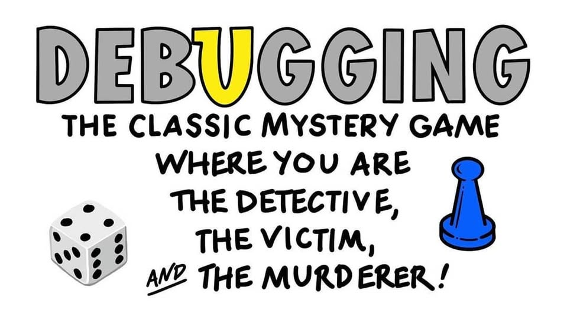

13 Control Structures
Control structures are statements in a program that determine when code is evaluated (and how many times it might be evaluated). There are two main types of control structures: if-statements and loops.
Objectives
- Understand how to use conditional statements
- Understand how conditional statements are evaluated by a program
- Use program flow diagrams to break a problem into parts and evaluate how a program will execute
- Understand how to use loops
- Select the appropriate type of loop for a problem
13.1 Mindset
Before we start on the types of control structures, let’s get in the right mindset. We’re all used to “if-then” logic, and use it in everyday conversation, but computers require another level of specificity when you’re trying to provide instructions.
Check out this video of the classic “make a peanut butter sandwich instructions challenge”:
Here’s another example:

The key takeaways from these bits of media are that you should read this section with a focus on exact precision - state exactly what you mean, and the computer will do what you say. If you instead expect the computer to get what you mean, you’re going to have a bad time.
13.2 Conditional Statements
Conditional statements determine if code is evaluated.
They look like this:
if (condition)
then
(thing to do)
else
(other thing to do)The else (other thing to do) part may be omitted.
When this statement is read by the computer, the computer checks to see if condition is true or false. If the condition is true, then (thing to do) is also run. If the condition is false, then (other thing to do) is run instead.
In R, the logical condition after if must be in parentheses. It is common to then enclose the statement to be run if the condition is true in {} so that it is clear what code matches the if statement. You can technically put the condition on the line after the if (x > 2) line, and everything will still work, but then it gets hard to figure out what to do with the else statement - it technically would also go on the same line, and that gets hard to read.
So while the 2nd version of the code technically works, the first version with the brackets is much easier to read and understand. Please try to emulate the first version!
x = 3
y = 1
if x > 2:
y = 8
else:
y = 4
print("x =", x, "; y =", y)
## x = 3 ; y = 8In python, all code grouping is accomplished with spaces instead of with brackets. So in python, we write our if statement as if x > 2: with the colon indicating that what follows is the code to evaluate. The next line is indented with 2 spaces to show that the code on those lines belongs to that if statement. Then, we use the else: statement to provide an alternative set of code to run if the logical condition in the if statement is false. Again, we indent the code under the else statement to show where it “belongs”.
Python will throw errors if you mess up the spacing. This is one thing that is very annoying about Python… but it’s a consequence of trying to make the code more readable.
13.2.2 Representing Conditional Statements as Diagrams
A common way to represent conditional logic is to draw a flow chart diagram.
In a flow chart, conditional statements are represented as diamonds, and other code is represented as a rectangle. Yes/no or True/False branches are labeled. Typically, after a conditional statement, the program flow returns to a single point.

13.2.3 Chaining Conditional Statements: Else-If
In many cases, it can be helpful to have a long chain of conditional statements describing a sequence of alternative statements.
While different languages have different conventions for this, it’s helpful to conceptualize the if-else-if-else pattern as a series of binary choices evaluated in sequence. I like to imagine a superhero trying to make contingency plans for a battle with their nemesis - if they try this, then I’ll do this, and if that doesn’t work, then I’ll do this other thing. The important thing is to make sure that all possible outcomes are covered, because if there is an edge case that isn’t covered, it will inevitably lead to a bug that you’ll have to track down later.
Suppose I want to determine what categorical age bracket someone falls into based on their numerical age. All of the bins are mutually exclusive - you can’t be in the 25-40 bracket and the 41-55 bracket.

The important thing to realize when examining this program flow map is that if age <= 18 is true, then none of the other conditional statements even get evaluated. That is, once a statement is true, none of the other statements matter. Because of this, it is important to place the most restrictive statement first.

If for some reason you wrote your conditional statements in the wrong order, the wrong label would get assigned:

In code, we would write this statement using else-if (or elif) statements.
age <- 40 # change this as you will to see how the code works
if (age < 18) {
bracket <- "<18"
} else if (age <= 25) {
bracket <- "18-25"
} else if (age <= 40) {
bracket <- "26-40"
} else if (age <= 55) {
bracket <- "41-55"
} else if (age <= 65) {
bracket <- "56-65"
} else {
bracket <- ">65"
}
bracket
## [1] "26-40"Python uses elif as a shorthand for else if statements. As always, indentation/white space in python matters. If you put an extra blank line between two elif statements, then the interpreter will complain. If you don’t indent properly, the interpreter will complain.
age = 40 # change this to see how the code works
if age < 18:
bracket = "<18"
elif age <= 25:
bracket = "18-25"
elif age <= 40:
bracket = "26-40"
elif age <= 55:
bracket = "41-55"
elif age <= 65:
bracket = "56-65"
else:
bracket = ">65"
bracket
## '26-40'The US Tax code has brackets, such that the first $10,275 of your income is taxed at 10%, anything between $10,275 and $41,775 is taxed at 12%, and so on.
Here is the table of tax brackets for single filers in 2022:
| rate | Income |
|---|---|
| 10% | $0 to $10,275 |
| 12% | $10,275 to $41,775 |
| 22% | $41,775 to $89,075 |
| 24% | $89,075 to $170,050 |
| 32% | $170,050 to $215,950 |
| 35% | $215,950 to $539,900 |
| 37% | $539,900 or more |
Note: For the purposes of this problem, we’re ignoring the personal exemption and the standard deduction, so we’re already simplifying the tax code.
Write a set of if statements that assess someone’s income and determine what their overall tax rate is.
Hint: You may want to keep track of how much of the income has already been taxed in a variable and what the total tax accumulation is in another variable.

Control flow diagrams can be extremely helpful when figuring out how programs work (and where gaps in your logic are when you’re debugging). It can be very helpful to map out your program flow as you’re untangling a problem.
# Start with total income
income <- 200000
# x will hold income that hasn't been taxed yet
x <- income
# y will hold taxes paid
y <- 0
if (x <= 10275) {
y <- x*.1 # tax paid
x <- 0 # All money has been taxed
} else {
y <- y + 10275 * .1
x <- x - 10275 # Money remaining that hasn't been taxed
}
if (x <= (41775 - 10275)) {
y <- y + x * .12
x <- 0
} else {
y <- y + (41775 - 10275) * .12
x <- x - (41775 - 10275)
}
if (x <= (89075 - 41775)) {
y <- y + x * .22
x <- 0
} else {
y <- y + (89075 - 41775) * .22
x <- x - (89075 - 41775)
}
if (x <= (170050 - 89075)) {
y <- y + x * .24
x <- 0
} else {
y <- y + (170050 - 89075) * .24
x <- x - (170050 - 89075)
}
if (x <= (215950 - 170050)) {
y <- y + x * .32
x <- 0
} else {
y <- y + (215950 - 170050) * .32
x <- x - (215950 - 170050)
}
if (x <= (539900 - 215950)) {
y <- y + x * .35
x <- 0
} else {
y <- y + (539900 - 215950) * .35
x <- x - (539900 - 215950)
}
if (x > 0) {
y <- y + x * .37
}
print(paste("Total Tax Rate on $", income, " in income = ", round(y/income, 4)*100, "%"))
## [1] "Total Tax Rate on $ 2e+05 in income = 22.12 %"# Start with total income
income = 200000
# untaxed will hold income that hasn't been taxed yet
untaxed = income
# taxed will hold taxes paid
taxes = 0
if untaxed <= 10275:
taxes = untaxed*.1 # tax paid
untaxed = 0 # All money has been taxed
else:
taxes = taxes + 10275 * .1
untaxed = untaxed - 10275 # money remaining that hasn't been taxed
if untaxed <= (41775 - 10275):
taxes = taxes + untaxed * .12
untaxed = 0
else:
taxes = taxes + (41775 - 10275) * .12
untaxed = untaxed - (41775 - 10275)
if untaxed <= (89075 - 41775):
taxes = taxes + untaxed * .22
untaxed = 0
else:
taxes = taxes + (89075 - 41775) * .22
untaxed = untaxed - (89075 - 41775)
if untaxed <= (170050 - 89075):
taxes = taxes + untaxed * .24
untaxed = 0
else:
taxes = taxes + (170050 - 89075) * .24
untaxed = untaxed - (170050 - 89075)
if untaxed <= (215950 - 170050):
taxes = taxes + untaxed * .32
untaxed = 0
else:
taxes = taxes + (215950 - 170050) * .32
untaxed = untaxed - (215950 - 170050)
if untaxed <= (539900 - 215950):
taxes = taxes + untaxed * .35
untaxed = 0
else:
taxes = taxes + (539900 - 215950) * .35
untaxed = untaxed - (539900 - 215950)
if untaxed > 0:
taxes = taxes + untaxed * .37
print("Total Tauntaxed Rate on $", income, " in income = ", round(taxes/income, 4)*100, "%")
## Total Tauntaxed Rate on $ 200000 in income = 22.12 %There are better ways to represent this calculation that depend on concepts like vectors or loops – see Section 13.2.5 for details. Any time you find yourself copy-pasting code and changing values, you should consider using vectorized code, a loop, or eventually, a function instead. It’s less typing and easier to maintain.
The case statement is relatively new in Python (added in 3.10), so if you are using an older version of Python, you will not be able to make the code in this section work.
The code to implement a long series of if-else statements can get rather long and hard to follow. This complexity is particularly unnecessary when all of the if() statements are related to one variable, and it’s even more unnecessary when that variable has a fixed number of values that correspond to different actions.
The switch statement (implemented using match and case in Python, case_when in dplyr, and switch in base R) is a way to make long sets of conditionals clearer and more compact.
A general switch statement looks like this:
switch (test-value) {
case (first-value):
<do something>
case (second-value):
<do something else>
default-value:
<do the default thing>
}Essentially, in a switch statement, you look for one of a finite list of values, and do something based on which value is true first in the sequence. Ideally the values first-value and second-value are completely disjoint, but that doesn’t always happen – however, in a switch statement, as in chained if-statements, the first value to be TRUE causes subsequent statements not to be executed at all, which essentially means that subsequent statements are implicitly of the form second-value and NOT first-value, third-value and NOT second-value and NOT first-value, and so on.
Note that any series of chained if statements based on a single quantitative variable can be converted to allow the use of a switch statement by assigning labels to each different group of conditions and then using a switch statement to evaluate the variable holding the labels.
For each implementation, we’ll look at how we might do something based on a coffee order size, using Starbucks size labels (which I’ve never gotten straight, but I don’t drink a ton of coffee).
The switch statement in base R works differently depending on whether the first argument is a character string or a number. If the first argument is a number, it’s converted to an integer. Factors (sequential integers with labels) should be manually converted to character variables or integers; a switch statement with a factor as the first argument will issue a warning. If the first argument is a character vector, then the remaining arguments should be named according to the possible values of that character vector. An additional unnamed argument should be included at the end to handle any unaccounted for cases.
size <- c("short", "tall", "grande", "venti", "trenta")
sizefac <- factor(size, levels = size, ordered = T)
size[1]
## [1] "short"
sizefac[1]
## [1] short
## Levels: short < tall < grande < venti < trenta
switch(
size[3],
"short" = 8,
"tall" = 12,
"grande" = 16,
"venti" = 20,
"trenta" = 30,
NA) # default value is unnamed
## [1] 16
switch(
sizefac[3],
"short" = 8,
"tall" = 12,
"grande" = 16,
"venti" = 20,
"trenta" = 30,
NA)
## [1] 16
# Warning if you use a factor without converting
# to a character variable
switch(as.numeric(sizefac[3]), 8, 12, 16, 20, 30)
## [1] 16
# If an integer, all arguments must be unnamed
# No default value is possibleimport pandas as pd
size = ["short", "tall", "grande", "venti", "trenta"]
match size[2]:
case "short": 8
case "tall": 12
case "grande": 16
case "venti": 20
case "trenta": 30
case _: pd.NA
## 16The approach taken by the case_match function is similar to that in python, but it’s vectorized, which is convenient – we don’t have to loop over the full vector to get the size in ounces for each cup.
case_match also works with factors without requiring an explicit type conversion.
library(dplyr)
size <- c("short", "tall", "grande", "venti", "trenta")
sizefac <- factor(size, levels = size, ordered = T)
case_match(
size,
"short" ~ 8,
"tall" ~ 12,
"grande" ~ 16,
"venti" ~ 20,
"trenta" ~ 30,
.default = NA
)
## [1] 8 12 16 20 30
case_match(
sizefac,
"short" ~ 8,
"tall" ~ 12,
"grande" ~ 16,
"venti" ~ 20,
"trenta" ~ 30,
.default = NA
)
## [1] 8 12 16 20 30But, case_match does something else that’s somewhat unique – it allows you to specify multiple labels that correspond to the same output value. Suppose our Starbucks is out of 8 and 30 oz cups, and they are thus offering free upgrades from short to tall orders, while not offering any trenta orders.
case_match(
sizefac,
c("short","tall") ~ 12,
"grande" ~ 16,
"venti" ~ 20,
.default = NA
)
## [1] 12 12 16 20 NAThis setup allows us to collapse categories easily while still keeping the basic syntax and options for order sizes the same.
case_when in dplyr
dplyr also includes an additional function that is somewhat different than the canonical switch statement: case_when. case_when uses logical expressions on one side, making it much closer to a direct equivalent of an if-then-else-if… chain of expressions. The first expression to evaluate to TRUE is what determines the output.
Let’s consider our income tax example from before. Try to write the tax calculation out using a case-when statement in R. Can you come up with an equivalent formulation in Python by defining an intermediate labeled variable?
# Start with total income
income <- 200000
# x will hold income that hasn't been taxed yet
x <- income
# y will hold taxes paid
y <- case_when(
x <= 10275 ~ x*.1,
x <= 41775 ~ 10275*.10 + (x-10275)*.12,
x <= 80975 ~ 10275*.10 + (41775-10275)*.12 +
(x - 41775)*.22,
x <= 170050 ~ 10275*.10 + (41775-10275)*.12 +
(80975 - 41775)*.22 + (x - 80975)*.24,
x <= 215950 ~ 10275*.10 + (41775-10275)*.12 +
(80975 - 41775)*.22 + (170050 - 80975)*.24 +
(x - 170050)*.32,
x <= 539900 ~ 10275*.10 + (41775-10275)*.12 +
(80975 - 41775)*.22 + (170050 - 80975)*.24 +
(215950 - 170050)*.32 + (x-215950)*.35,
.default = 10275*.10 + (41775-10275)*.12 +
(80975 - 41775)*.22 + (170050 - 80975)*.24 +
(215950 - 170050)*.32 + (539900 - 215950)*.35 +
(x - 539900) * .37
)
print(paste("Total Tax Rate on $", income, " in income = ", round(y/income, 4)*100, "%"))
## [1] "Total Tax Rate on $ 2e+05 in income = 22.2 %"This is a much more concise set of statements that are still pretty clear. Note that we’ve had to refactor the calculation, so that each calculation happens separately rather than being cumulative, but that isn’t so terrible.
import numpy as np
# Start with total income
income = 200000
# x will hold income that hasn't been taxed yet
x = income
brackets = np.array([10275, 41775, 80975, 170050, 215950, 539900])
brackets = brackets.astype('int32')
bracket_labels = np.array([str(i) for i in brackets])
bracket_labels = np.append(bracket_labels, "Inf")
brackets = np.append(brackets, np.inf)
match bracket_labels[brackets >= x][0]:
case "10275":
y = x*.1
case "41775":
y = (x-10275)*.12 + 10275*.1
case "80975":
y = (x-41775)*.22 + (41775-10275)*.12 + 10275*.1
case "170050":
y = (x-80975)*.24 + (80975-41775)*.22 + (41775-10275)*.12 + 10275*.1
case "215950":
y = (x-170050)*.32 + (170050-80975)*.24 + (80975-41775)*.22 + (41775-10275)*.12 + 10275*.1
case "539900":
y = (x-215950)*.35 + (215950-170050)*.32 + (170050-80975)*.24 + (80975-41775)*.22 + (41775-10275)*.12 + 10275*.1
case _:
y = (x-539900)*.37 + (539900-215950)*.35 + (215950-170050)*.32 + (170050-80975)*.24 + (80975-41775)*.22 + (41775-10275)*.12 + 10275*.1
y
## 44393.5
print("Total Tax Rate on $" + str(income) + " in income = " + str(round(y/income, 4)*100) + "%")
## Total Tax Rate on $200000 in income = 22.2%To be able to use a python case statement, we first have to decide on some labels that are mutually exclusive and indicate which set of tax rates to apply. In this case, I’ve decided to use the next bracket above the total income level as the label, which tells me that I don’t have to worry about any income over the labeled level.
In some cases, it is possible to replace conditional sequences with carefully constructed vectorized calculations. This is much more efficient (especially in R, where vectorization is one primary way to decrease evaluation time) and can be easier to read and understand as well.
We can use vectorized calculations and make the tax calculations even more succinct, eliminating the need for any if-statements (or similar constructs).
import numpy as np
# Start with total income
x = 200000
brackets = np.array([ 0, 10275, 41775, 80975, 170050, 215950, 539900, np.inf])
rates = np.array([ .1, .12, .22, .24, .32, .35, .37])
np.sum(-np.diff(np.maximum(0, x - brackets))*rates)
## np.float64(44393.5)This is the simplest refactoring of this problem, but it’s also less directly comprehensible. It will evaluate much more quickly than the conditional formulations in computer time, but the programmer has to go through and understand what is happening, which isn’t always easy to do, particularly when you didn’t write the code.
Here is a longer sequence of code that performs the same calculations, with variables named descriptively.
brackets <- c( 0, 10275, 41775, 80975, 170050, 215950, 539900, Inf)
rates <- c( .1, .12, .22, .24, .32, .35, .37)
amount_above_bracket <- x - brackets
amount_above_bracket
cumulative_amount_subject_to_rate <- pmax(0, amount_above_bracket)
cumulative_amount_subject_to_rate
amount_subject_to_rate <- -diff(cumulative_amount_subject_to_rate)
taxes_per_level <- amount_subject_to_rate*rates
# Display calculation in table
rbind(amount = amount_subject_to_rate, rate = rates, tax_at_level = taxes_per_level)
total_taxes <- sum(taxes_per_level)
total_taxes
## [1] 200000 189725 158225 119025 29950 -15950 -339900 -Inf
## [1] 200000 189725 158225 119025 29950 0 0 0
## [,1] [,2] [,3] [,4] [,5] [,6] [,7]
## amount 10275.0 31500.00 39200.00 89075.00 29950.00 0.00 0.00
## rate 0.1 0.12 0.22 0.24 0.32 0.35 0.37
## tax_at_level 1027.5 3780.00 8624.00 21378.00 9584.00 0.00 0.00
## [1] 44393.5- 1
-
bracketsdefines the cutoffs for the different hierarchical tax rates, including the[539900, Inf)implicit bracket - 2
-
x - bracketscalculates the amount of income taxed at or above each rate - 3
-
pmax(0, x-brackets)does not allow the values to go below 0, so that we’re not paying negative taxes (though that would be nice, and some tax credits actually work that way) - 4
-
diff(...)subtracts value 1 from value 2, value 2 from value 3, and so on, shortening the vector by 1. This produces negative values in this case, so we have to multiply by -1 to get them back to positive values (we could also reverse the vector, diff, and then reverse again, e.g.sum(rev(diff(pmax(0, rev(x-brackets)))) * rates)). - 5
-
Then, we can multiply our values by their corresponding rates (
-diff(pmax(0, x-brackets))*rates). - 6
-
Finally, we add up the values (
sum) in the vector to get the total tax burden for someone making $200,000 per year.
import numpy as np
import pandas as pd
# Start with total income
x = 200000
brackets = np.array([ 0, 10275, 41775, 80975, 170050, 215950, 539900, np.inf])
rates = np.array([ .1, .12, .22, .24, .32, .35, .37])
amount_above_bracket = x - brackets
amount_above_bracket
cumulative_amount_subject_to_rate = np.maximum(0, amount_above_bracket)
cumulative_amount_subject_to_rate
amount_subject_to_rate = -np.diff(cumulative_amount_subject_to_rate)
taxes_per_level = amount_subject_to_rate*rates
# Display calculation in table
pd.DataFrame({"amount" : amount_subject_to_rate, "rate" : rates, "tax_at_level" : taxes_per_level})
total_taxes = sum(taxes_per_level)
total_taxes
## array([ 200000., 189725., 158225., 119025., 29950., -15950.,
## -339900., -inf])
## array([200000., 189725., 158225., 119025., 29950., 0., 0.,
## 0.])
## amount rate tax_at_level
## 0 10275.0 0.10 1027.5
## 1 31500.0 0.12 3780.0
## 2 39200.0 0.22 8624.0
## 3 89075.0 0.24 21378.0
## 4 29950.0 0.32 9584.0
## 5 -0.0 0.35 -0.0
## 6 -0.0 0.37 -0.0
## np.float64(44393.5)- 1
-
bracketsdefines the cutoffs for the different hierarchical tax rates, including the[539900, Inf)implicit bracket - 2
-
x - bracketscalculates the amount of income taxed at or above each rate - 3
-
pmax(0, x-brackets)does not allow the values to go below 0, so that we’re not paying negative taxes (though that would be nice, and some tax credits actually work that way) - 4
-
diff(...)subtracts value 1 from value 2, value 2 from value 3, and so on, shortening the vector by 1. This produces negative values in this case, so we have to multiply by -1 to get them back to positive values (we could also reverse the vector, diff, and then reverse again, e.g.sum(rev(diff(pmax(0, rev(x-brackets)))) * rates)). - 5
-
Then, we can multiply our values by their corresponding rates (
-diff(pmax(0, x-brackets))*rates). - 6
-
Finally, we add up the values (
sum) in the vector to get the total tax burden for someone making $200,000 per year.
This code uses slightly more memory by storing intermediate results, but it is much more readable – you can clearly associate the steps to each line of code. When the tax code changes, it will also be easier to change – instead of having to change the values of every tax bracket level in the conditional statement, we have to change the vector one time, and everything else will update accordingly.
It is always a trade-off to decide between a balance of computational time, computational resource requirements, programmer time (both to program and to maintain the code), and readability. The vectorized calculation is less readable, but more computationally efficient. We can make it slightly more readable by increasing storage requirements and using intermediate variables that are well named to make the calculation process more comprehensible.
Sometimes, it’s that you wrote the code years ago, and past you was invariably smarter and dumber than you are currently. 
13.3 Loops
Often, we write programs which update a variable in a way that the new value of the variable depends on the old value:
x = x + 1This means that we add one to the current value of x.
Before we write a statement like this, we have to initialize the value of x because otherwise, we don’t know what value to add one to.
x = 0
x = x + 1We sometimes use the word increment to talk about adding one to the value of x; decrement means subtracting one from the value of x.
A particularly powerful tool for making these types of repetitive changes in programming is the loop, which executes statements a certain number of times. Loops can be written in several different ways, but all loops allow for executing a block of code a variable number of times.
13.3.1 While Loops
In the previous section, we discussed conditional statements, where a block of code is only executed if a logical statement is true. The simplest type of loop is the while loop, which executes a block of code until a statement is no longer true.

x <- 0
while (x < 10) {
# Everything in here is executed
# during each iteration of the loop
print(x)
x <- x + 1
}
## [1] 0
## [1] 1
## [1] 2
## [1] 3
## [1] 4
## [1] 5
## [1] 6
## [1] 7
## [1] 8
## [1] 9x = 0
while x < 10:
print(x)
x = x + 1
## 0
## 1
## 2
## 3
## 4
## 5
## 6
## 7
## 8
## 9Write a while loop that verifies that \[\lim_{N \rightarrow \infty} \prod_{k=1}^N \left(1 + \frac{1}{k^2}\right) = \frac{e^\pi - e^{-\pi}}{2\pi}.\]
Terminate your loop when you get within 0.0001 of \(\frac{e^\pi - e^{-\pi}}{2\pi}\). At what value of \(k\) is this point reached?
Breaking down math notation for code:
If you are unfamiliar with the notation \(\prod_{k=1}^N f(k)\), this is the product of \(f(k)\) for \(k = 1, 2, ..., N\), \[f(1)\cdot f(2)\cdot ... \cdot f(N)\]
To evaluate a limit, we just keep increasing \(N\) until we get arbitrarily close to the right hand side of the equation.
In this problem, we can just keep increasing \(k\) and keep track of the cumulative product. So we define k=1, prod = 1, and ans before the loop starts. Then, we loop over k, multiplying prod by \((1 + 1/k^2)\) and then incrementing \(k\) by one each time. At each iteration, we test whether prod is close enough to ans to stop the loop.
In R, you will use pi and exp() - these are available by default without any additional libraries or packages.
Note that in python, you will have to import the math library to get the values of pi and the exp function. You can refer to these as math.pi and math.exp() respectively.
import math
k = 1
prod = 1
ans = (math.exp(math.pi) - math.exp(-math.pi))/(2*math.pi)
delta = 0.0001
while abs(prod - ans) >= 0.0001:
prod = prod * (1 + k**-2)
k = k + 1
if k > 500000:
break
print("At ", k, " iterations, the product is ", prod, "compared to the limit ", ans,".")
## At 36761 iterations, the product is 3.675977910975878 compared to the limit 3.676077910374978 .It is very easy to create an infinite loop when you are working with while loops. Infinite loops never exit, because the condition is always true. If in the while loop example we decrement x instead of incrementing x, the loop will run forever.
You want to try very hard to avoid ever creating an infinite loop - it can cause your session to crash.
One common way to avoid infinite loops is to create a second variable that just counts how many times the loop has run. If that variable gets over a certain threshold, you exit the loop.
This while loop runs until either x < 10 or n > 50 - so it will run an indeterminate number of times and depends on the random values added to x. Since this process (a ‘random walk’) could theoretically continue forever, we add the n>30 check to the loop so that we don’t tie up the computer for eternity.
x <- 0
n <- 0 # count the number of times the loop runs
while (x < 10) {
print(x)
x <- x + rnorm(1) # add a random normal (0, 1) draw each time
n <- n + 1
if (n > 30)
break # this stops the loop if n > 30
}
## [1] 0
## [1] -0.6999157
## [1] -1.488577
## [1] -3.416473
## [1] -3.551984
## [1] -4.403012
## [1] -3.638665
## [1] -5.867218
## [1] -5.493864
## [1] -4.73579
## [1] -6.201982
## [1] -4.831426
## [1] -6.013207
## [1] -6.357643
## [1] -5.404441
## [1] -5.857407
## [1] -6.506772
## [1] -6.397666
## [1] -5.519748
## [1] -7.008371
## [1] -7.187883
## [1] -7.633027
## [1] -7.703524
## [1] -7.734773
## [1] -7.729125
## [1] -6.862941
## [1] -6.840562
## [1] -6.381707
## [1] -6.060932
## [1] -5.638446
## [1] -4.375715import numpy as np; # for the random normal draw
x = 0
n = 0 # count the number of times the loop runs
while x < 10:
print(x)
x = x + np.random.normal(0, 1, 1) # add a random normal (0, 1) draw each time
n = n + 1
if n > 50:
break # this stops the loop if n > 50
## 0
## [0.26347533]
## [1.89365279]
## [2.20355313]
## [3.28545654]
## [4.89117171]
## [5.50485549]
## [5.73126195]
## [2.84108075]
## [3.41491495]
## [2.82287873]
## [1.1817676]
## [0.82886643]
## [1.13379805]
## [1.41570014]
## [1.03726872]
## [0.48418744]
## [0.99300931]
## [0.99367004]
## [2.24995568]
## [1.16782232]
## [0.13320904]
## [-0.07952444]
## [0.15374879]
## [0.01431605]
## [0.04275899]
## [0.76944886]
## [0.554636]
## [1.03214126]
## [1.02176661]
## [2.07486238]
## [2.39914868]
## [0.45870138]
## [1.47565132]
## [1.42003753]
## [1.41940179]
## [2.04938844]
## [4.74342591]
## [3.16382021]
## [2.00783176]
## [2.03214799]
## [2.15530727]
## [2.91544739]
## [1.53786484]
## [2.12686281]
## [2.73375327]
## [3.47318604]
## [4.34221329]
## [4.34083016]
## [5.61808865]
## [5.95977016]In both of the examples above, there are more efficient ways to write a random walk, but we will get to that later. The important thing here is that we want to make sure that our loops don’t run for all eternity.
13.3.2 For Loops
Another common type of loop is a for loop. In a for loop, we run the block of code, iterating through a series of values (commonly, one to N, but not always). Generally speaking, for loops are known as definite loops because the code inside a for loop is executed a specific number of times. While loops are known as indefinite loops because the code within a while loop is evaluated until the condition is falsified, which is not always a known number of times.


for (i in 1:5 ) {
print(i)
}
## [1] 1
## [1] 2
## [1] 3
## [1] 4
## [1] 5for i in range(5):
print(i)
## 0
## 1
## 2
## 3
## 4By default range(5) goes from 0 to 5, the upper bound. When i = 5 the loop exits. This is because range(5) creates a vector [0, 1, 2, 3, 4].
For loops are often run from 1 to N (or 0 to N-1 in python) but in essence, a for loop is very commonly used to do a task for every value of a vector.
In R, there is a built-in variable called month.name. Type month.name into your R console to see what it looks like. If we want to iterate along the values of month.name, we can:
for (i in month.name)
print(i)
## [1] "January"
## [1] "February"
## [1] "March"
## [1] "April"
## [1] "May"
## [1] "June"
## [1] "July"
## [1] "August"
## [1] "September"
## [1] "October"
## [1] "November"
## [1] "December"We can even pick out the first 3 letters of each month name and store them into a vector called abbr3
abbr3 <- rep("", length(month.name))
for (i in 1:length(month.name))
abbr3[i] <- substr(month.name[i], 1, 3)
data.frame(full_name = month.name, abbrev = abbr3)
## full_name abbrev
## 1 January Jan
## 2 February Feb
## 3 March Mar
## 4 April Apr
## 5 May May
## 6 June Jun
## 7 July Jul
## 8 August Aug
## 9 September Sep
## 10 October Oct
## 11 November Nov
## 12 December Dec- 1
- Create new vector of the correct length
- 2
- We have to iterate along the index (1 to length) instead of the name in this case because we want to store the result in a corresponding row of a new vector
- 3
- We can combine the two vectors into a data frame so that each row corresponds to a month and there are two columns: full month name, and abbreviation
In python, we have to define our vector or list to start out with, but that’s easy enough:
import calendar
month_name = list(calendar.month_name)[1:13]
for i in month_name:
print(i)
## January
## February
## March
## April
## May
## June
## July
## August
## September
## October
## November
## December- 1
- Create a list with month names. For some reason, by default there’s a “” as the first entry, so we’ll get rid of that
- 2
- Iterate along the vector, printing out each element
We can even pick out the first 3 letters of each month name and store them into a vector called abbr3.
Python handles lists best when you use pythonic expressions. The linked post has an excellent explanation of why enumerate works best here.
abbr3 = [""] * len(month_name)
for i, val in enumerate(month_name):
abbr3[i] = val[0:3:]
abbr3
## ['Jan', 'Feb', 'Mar', 'Apr', 'May', 'Jun', 'Jul', 'Aug', 'Sep', 'Oct', 'Nov', 'Dec']- 1
- Create new vector of the correct length
- 2
-
We have to iterate along the index because we want to store the result in a corresponding row of a new vector. Python allows us to iterate along both the index
iand the valuevalat the same time, which is convenient. - 3
- Strings have indexes by character, so this gets characters 0, 1, and 2.
There are additional types of iterators and control statements for iterators available in some languages, such as the doWhile loop and recursion. If you’re curious, expand the section below, but you can always write a doWhile loop as a while loop and can usually restate a recursion as a loop, so these constructs are largely for convenience.
The do-while loop runs the code first and then evaluates the logical condition to determine whether the loop will be run again.
In R, do-while loops are most naturally implemented using a very primitive type of iteration: a repeat statement.
repeat {
# statements go here
if (condition)
break # this exits the repeat statement
}In python, do-while loops are most naturally implemented using a while loop with condition TRUE:
while TRUE:
# statements go here
if condition:
break13.3.4 Recursion
An additional means of running code an indeterminate number of times is the use of recursion, which we cannot cover until we learn about functions. I have added an additional section, Section 41.2.3, to cover this topic, but it is not essential to being able to complete most basic data programming tasks. Recursion is useful when working with structures such as trees (including phylogenetic trees) and nested lists.
13.3.5 Controlling Loops with Break, Next, Continue
While I do not often use break, next, and continue statements, they do exist in both languages and can be useful for controlling the flow of program execution. I have moved the section on this to Section 41.2.2 for the sake of brevity and to reduce the amount of new material those without programming experience are being exposed to in this section.